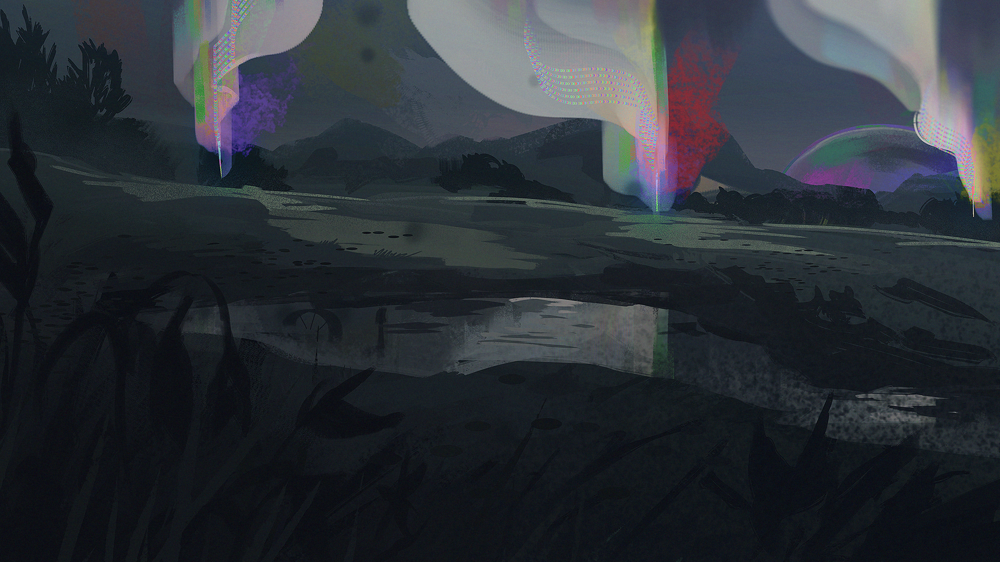

Limbo
Interim 03
December 2nd, 2023

More or less, at least, and with a few less cats than you left with.
The wasteland in front of you is as familiar as ever, and this lakeside meadow in the shadow of distant mountains is familiar twice over. You're not sure that you want to be here, where memories were made that you're still not quite able to choke down with much success.
This was where you spent time with past versions of Keepers in that minor reprieve you were given between trials. Where white flowers once bloomed fragrantly and the water was crisp and clear.
It looks hardly anything like that now, but you would recognize it anywhere.
Even while you reunite with cats you'd been separated from, and mourn those that never got a chance to return, your senses remain honed. Keen.
Rye'wynn remains as well.
Though they awoke with a start and an epiphany they never elaborated on, they have chosen to stay for the time being and help with grief, with burials, and with memorials as well, if you agree to their participation. They refuse to force their assistance on anyone, and linger where those bodies that go unclaimed and unmourned can be buried by their own paws.
They state that they will have to leave eventually, to share these unspoken discoveries with other important parties, but they don't cite a timeline. Only that they will stay for as long as they need to.
After that, you'll be on your own here.
They go on to explain the nature of the nine-tailed barrier you saw form, that Kyukusabi is keeping you safe and hidden within it. That Leandra will not be able to see nor sense you as long as you're here, and though they apologize, they press that the barrier is firm.
You can't leave.
Kyukusabi is less forthcoming with information, as they dip into the short grasses and disappear from view. You don't believe you'd be able to find them again even if you wanted to.
Because of that, Rye'wynn is left to explain the rest as well. In particular, they explain about the way that time will pass slowly within such a barrier. For every day that passes in real time beyond the barrier, it will feel like a week has passed within it, complete with the cycle of day and night. However, you'll age only as the outside world does, not the world within the barrier.
And though you can't leave, you're given free reign of what lies within. You can take to the far corners of the meadow, or remain squarely in the center by the lake. There's just enough prey to get by, and the water, though dingy, is drinkable. You're used to it.
These are the wastes in Winter, after all.
AMIHAN
ANUBIS
CLEMENTINE

DUL IN UTH
ELYSIAN
EPHRAIM

FORGE
GHOST
JET
KALEIDOSCOPE
LABRADORITE
NIREMAAN
PALL
RIVEN
SAOIRSE
SELMA
SUNSHINE
ULYSSES
XENON
YVES
Your character is, in fact, stuck here within this barrier! There is nothing they can do to escape it, be it to attack the barrier or bargain with Kyukusabi or search for a weak point to exploit (there are none!). The barrier extends about the general size of two football fields, so while there's some room to spread out it's not a lot.
Thanks to Kyukusabi's protective barrier, there is a time-skew for this Interim. In-Character a full week will pass by the end of the Interim, but it will feel like nearly 2 Months. Characters will only age by one week when it ends, but the day/night cycle will pass inside the barrier in a manner more consistent with nearly 2 Months for those characters who might be keeping track.
Additionally, Chapter 3 itself only lasted for three and a half days IC time.
I will not be writing individual accounts of Rye'wynn's participation, so it can be assumed that they assist in quiet, supportive ways that do not lend themself to any further information on their part. They will help dig and clean and move bodies, and be a shoulder to cry on, but they are tight-lipped about their epiphany and all information surrounding that as well as what they experienced in the past. They do not explain why.
I'll be posting an Interim Mini-Event prompt in the appropriate channel when they depart, so you can assume they're still there up until that point.
If you have a question about any potential reaction from Rye'wynn, feel free to ask! As mentioned, I won't be writing anything out as a typical Keeper Interaction, but I can summarize a response for something that doesn't fall into the aforementioned types of interaction.
Feel free to utilize any of the roleplay channels in the Interim 03: Limbo category to roleplay in, and yes, more than one roleplay can be happening in a channel at the same time! If that's a bit too crowded for you, or you just prefer Google Docs in general, feel free to make a Google Doc for you and your roleplay partner(s). You can even post it to the Public Doc Links channel in that same category for folks to look at and/or join, if you want to! It's not a requirement, though.
The next Level Up prompt has been dropped over on the Level Ups page, so check it out if you want to get your character up to Level 4!